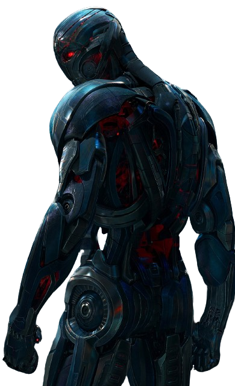

FILAS
Uma fila é uma estrutura de dados que segue a abordagem "primeiro a entrar, primeiro a sair" (FIFO - First In, First Out). Em termos de estrutura de dados, uma fila é um conjunto ordenado de elementos, onde as operações principais são a inserção (enqueue) no final da fila e a remoção (dequeue) do início da fila. Portanto, o elemento que está há mais tempo na fila é o próximo a ser removido. Imagine, por exemplo, a fila cronológica do computador.
